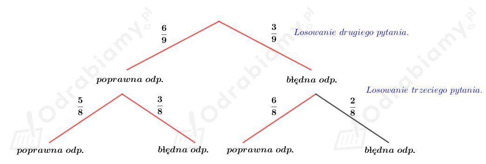

Do dyspozycji mamy cyfry: 1, 2, 3, 4, 5, 6. Mamy uzyskać liczby większe od 324 516.
Rozważamy przypadki:
1) Wypiszmy liczby większe od 324 516 postaci 324 _ _ _. Mamy: 324 561, 324 615, 324 651. Czyli mamy 3 możliwości.
2) Liczb większych od 324 516 postaci 325 _ _ _ jest 3!=6.
3) Liczb większych od 324 516 postaci 326 _ _ _ jest 3!=6.
4) Liczb większych od 324 516, których pierwszą cyfrą jest cyfra 3 mamy:
5) Liczb większych od 324 516, których pierwszą cyfrą jest cyfra 4, 5 lub 6 mamy:
Korzystając z reguły dodawania mamy:
Niech A, B⊂Ω. Wiemy, że P(A)=0,6, P(B')=0,3 oraz P(A∪B)=0,9.
Skoro P(B')=0,3, to
Korzystając z zależności
mamy:
Wyznaczmy P(A|B). Mamy:
Na egzaminie należy wylosować 3 pytania spośród 10, należy odpowiedzieć na co najmniej 2 pytania, aby zdać egzamin. Student potrafi odpowiedzieć na 7 pytań oraz wiemy, że potrafi odpowiedzieć na pierwsze pytanie. Zatem pozostają 2 pytania (spośród 9) na egzaminie i na co najmniej jedno z nich musi odpowiedzieć poprawnie.
Przedstawmy przebieg tego doświadczenia na drzewie:

Wyznaczmy prawdopodobieństwo zdania tego egzaminu. Mamy:
Odp. Prawdopodobieństwo zdania tego egzaminu wynosi 11/12.
Spośród liczb 1, 2, ..., 10 wybieramy cztery bez zwracania i ustawiamy w ciąg.
Obliczmy, ile jest wszystkich możliwych ciągów.
Pierwszą liczbę możemy wybrać na 10 sposobów.
Drugą liczbę możemy wybrać na 9 sposobów (jedną już wybraliśmy).
Trzecią liczbę możemy wybrać na 8 sposobów.
Czwartą liczbę możemy wybrać na 7 sposobów.
Wyznaczmy liczbę wszystkich możliwych ciągów. Mamy:
Obliczmy, ile jest monotonicznych ciągów.
Zauważmy, że ciąg 1, 2, 3, 4 jest monotonicznie rosnący, a ciąg 4, 3, 2, 1 jest monotonicznie malejący.
Wszystkich monotonicznych ciągów jest:
Wyznaczmy prawdopodobieństwo tego, że wybrany ciąg jest monotoniczny. Mamy:
Prawdopodobieństwo tego, że wybrany ciąg jest monotoniczny wynosi 1/12.
co kończy dowód.
Niech A będzie zdarzeniem polegającym na tym, że łucznik trafi w tarczę. Z treści zadania wiemy, że
Niech B będzie zdarzeniem polegającym na tym, że łucznik trafi w 10.
Wiemy, że
Z treści zadania wiemy, że prawdopodobieństwo trafienia w dziesiątkę, jeśli strzelił w tarczę wynosi 1-2/3p.
Korzystając ze wzoru na prawdopodowiebieństwo warunkowe
otrzymujemy równanie
czyli
Rzut dwiema kostkami 24 razy to schemat Bernoulliego.
Chcemy obliczyć prawdopodobieństwo otrzymania przynajmniej raz dwóch szóstek. Zajmiemy się zdarzeniem przeciwnym, czyli tym, że nie otrzymamy ani raz dwóch szóstek.
Sukcesem jest niewyrzucenie dwóch szóstek, wtedy p=35/36 oraz q=1/36.
Korzystając ze wzoru Bernoulliego, wyznaczmy prawdopodobieństwo niewyrzucenia dwóch szóstek. Mamy:
Wyznaczmy prawdopodobieństwo otrzymania przynajmniej raz dwóch szóstek. Mamy:
Odp. Prawdopodobieństwo otrzymania przynajmniej raz dwóch szóstek wynosi w przybliżeniu 0,4914.
Losujemy jedną liczbę spośród wszystkich liczb sześciocyfrowych.
Wyznaczmy, ile jest wszystkich liczb sześciocyfrowych:
Zatem
Niech A będzie zdarzeniem polegającym na tym, że wylosowana liczba ma tyle samo cyfr parzystych co nieparzystych.
Wyznaczmy, ile jest liczb sześciocyfrowych, które mają trzy cyfry parzyste i trzy cyfry nieparzyste:
Rozważmy przypadki:
1) Na pierwszym miejscu jest liczba parzysta (2, 4, 6 lub 8).
Dwa miejsca z pięciu dla cyfr parzystych możemy wybrać na
Musimy zapełnić te miejsca cyframi parzystymi (0, 2, 4, 6, 8), możemy je wybrać na 52 sposobów (wybieramy dwie spośród pięciu).
Pozostałe trzy miejsca dla cyfr nieparzystych możemy wybrać na 53 sposobów.
Zgodnie z regułą mnożenia mamy:
2) Na pierwszym miejscu jest liczba nieparzysta (1, 3, 5, 7, 9)
Dwa miejsca z pięciu dla cyfr nieparzystych możemy wybrać na
Musimy zapełnić te miejsca cyframi nieparzystymi (1, 3, 5, 7, 9), możemy je wybrać na 52 sposobów (wybieramy dwie spośród pięciu).
Pozostałe trzy miejsca dla cyfr parzystych możemy wybrać na 53 sposobów.
Zgodnie z regułą mnożenia mamy:
Zatem:
Wyznaczmy prawdopodobieństwo zajścia zdarzenia A. Mamy:
Danych jest pięć klasycznych kostek do gry oraz jedna nietypowa (z oczkami: 1, 2, 3, 4, 4, 6). Wybieramy jedną z nich, rzucamy nią dwukrotnie i otrzymujemy dwie czwórki.
Niech B1 oznacza zdarzenie polegające na wybraniu kostki klasycznej, a B2 - na wybraniu kostki nietypowej. Zauważmy, że
Niech A oznacza zdarzanie polegające na wyrzuceniu dwóch czwórek. Mamy wtedy:
oraz
Obliczmy prawdopodobieństwo tego, że rzucano kostką nietypową. Korzystając ze wzoru Bayesa mamy:
Odp. Prawdopodobieństwo tego, że rzucano kostką nietypową wynosi 4/9.
Tworzymy nieparzyste liczby stucyfrowe o sumie cyfr równej 5.
Zauważmy, że
Rozważmy przypadki:
1) Nieparzysta liczba stucyfrowa zbudowana z cyfr 1, 1, 1, 1, 1 oraz pozostałymi cyframi są 0.
Są to liczby postaci 1.............1.
Pozostaje umiejscowić trzy jedynki na pozostałych 98 miejscach. Możemy to zrobić na:
2) Nieparzysta liczba stucyfrowa zbudowana z cyfr 1, 1, 1, 2 oraz pozostałymi cyframi są 0.
Są to liczby postaci:
a) 2.............1
Pozostaje umiejscowić dwie jedynki na pozostałych 98 miejscach. Możemy to zrobić na:
b) 1.............1
Pozostaje umiejscowić 1 i 2 na pozostałych 98 miejscach.
Cyfrę 1 możemy umiejscowić na 98 sposobów. Następnie, cyfrę 2 możemy umiejscowić na 97 sposobów. Zatem
3) Nieparzysta liczba stucyfrowa zbudowana z cyfr 1, 2, 2 oraz pozostałymi cyframi są 0.
Są to liczby postaci 2.............1. Pozostaje umiejscowić cyfrę 2 na pozostałych 98 miejscach. Możemy to zrobić na 98 sposobów.
4) Nieparzysta liczba stucyfrowa zbudowana z cyfr 1, 1, 3 oraz pozostałymi cyframi są 0.
Są to liczby postaci:
a) 3.............1.
Pozostaje umiejscowić cyfrę 1 na pozostałych 98 miejscach. Możemy to zrobić na 98 sposobów.
b) 1.............3.
Pozostaje umiejscowić cyfrę 1 na pozostałych 98 miejscach. Możemy to zrobić na 98 sposobów.
c) 1.............1.
Pozostaje umiejscowić cyfrę 3 na pozostałych 98 miejscach. Możemy to zrobić na 98 sposobów.
5) Nieparzysta liczba stucyfrowa zbudowana z cyfr 1, 4 oraz pozostałymi cyframi są 0.
Istnieje dokładnie 1 taka liczba postaci 4000....0001.
6) Nieparzysta liczba stucyfrowa zbudowana z cyfr 2, 3 oraz pozostałymi cyframi są 0.
Istnieje dokładnie 1 taka liczba postaci 2000....0003.
Korzystając z reguły dodawania mamy:
Odp. Jest 166 749 liczb stucyfrowych nieparzystych o sumie cyfr równej 5.